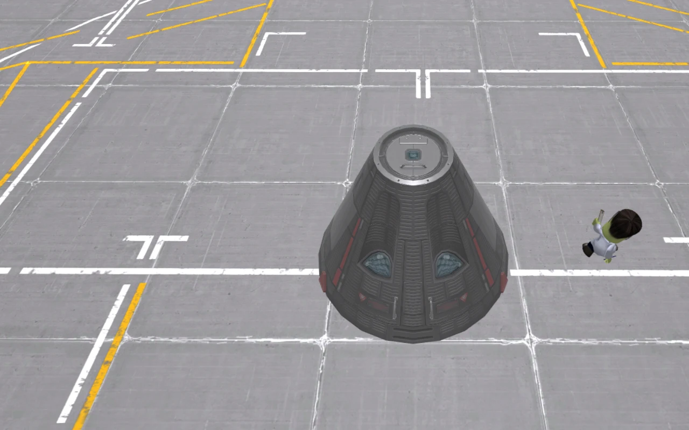
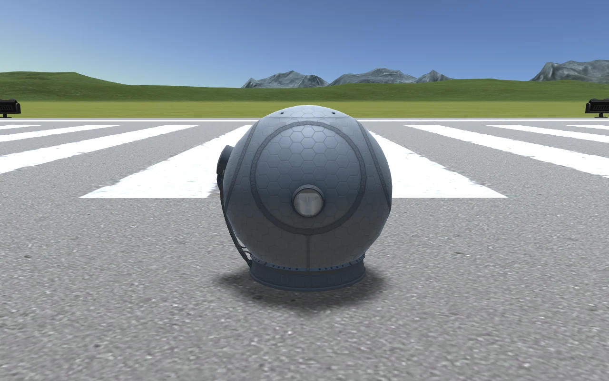
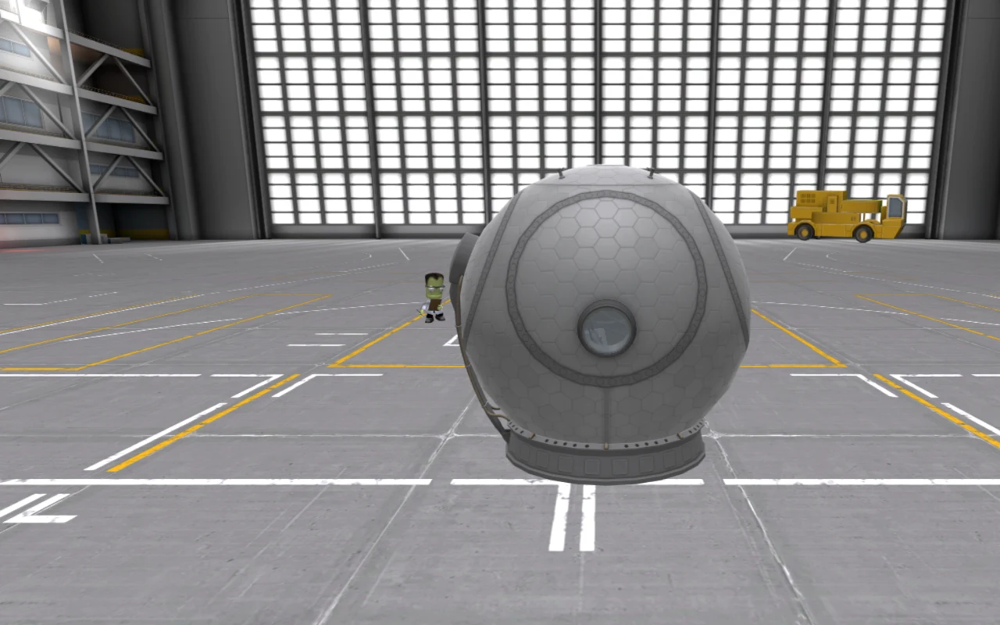

ShineFix home
← Back to supported mods
ReStock+
SupportedHuman tested
Parts
AL-1 'Lychee' Inflatable Docking Airlock
Mk2 'Acorn' Command Pod


Mystery Goo™ Inline Containment Unit
SC-9001R Radial Science Jr.
SP-1 'Clementine' Reentry Module


SP-2 'Tangerine' Reentry Module
SP-3 'Mandarin' Reentry Module
